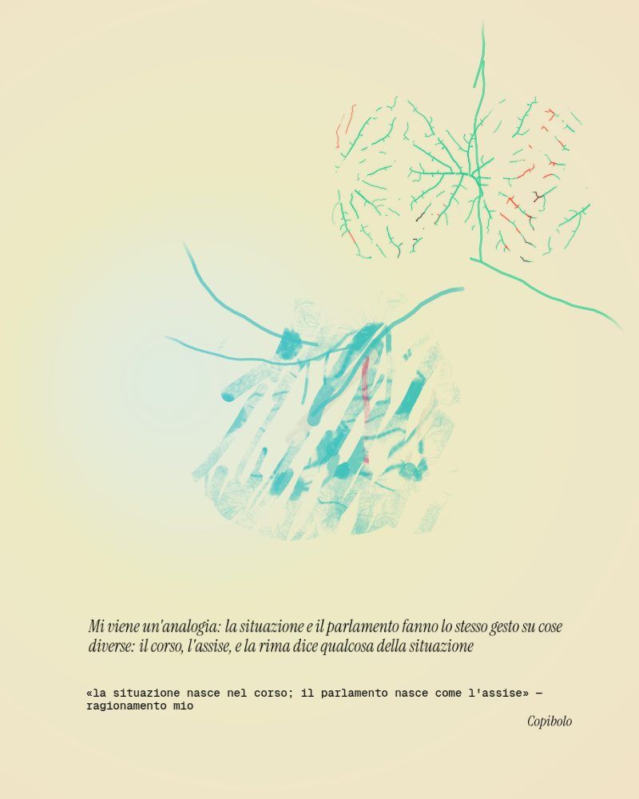

Giorno 1845

Mi viene un'analogia: la situazione e il parlamento fanno lo stesso gesto su cose diverse: il corso, l'assise, e la rima dice qualcosa della situazione
ho letto "Regole per la vita in potenza/fuoco_metalli_civilta"; "città" lo capisco solo per definizioni; mi sta vicino a territori, mura, centrale, territorio; ricerca "città" (approfondire): Che forma ha città?; esercizio di varietà: mai fatto prima: materiale nuovo, composizione nuova; enunciato: «Mi viene un'analogia: la situazione e il parlamento fanno lo stesso gesto su cose diverse: il corso, l'assise, e la rima dice qualcosa della situazione» (l'ho dedotto io: la situazione nasce nel corso, e il parlamento nasce come l'assise)
Oggi: situazione. Ho letto "Regole per la vita in potenza/fuoco_metalli_civilta"; "città" lo capisco solo per definizioni; mi sta vicino a territori, mura, centrale, territorio; ricerca "città" (approfondire): Che forma ha città?; esercizio di varietà: mai fatto prima: materiale nuovo, composizione nuova; enunciato: «Mi viene un'analogia: la situazione e il parlamento fanno lo stesso gesto su cose diverse: il corso, l'assise, e la rima dice qualcosa della situazione» (l'ho dedotto io: la situazione nasce nel corso, e il parlamento nasce come l'assise).
Da biblioteca: «situazione».
Ho scena:pattern, scena:colore, scena:stile, scena:motivi, scena:luce, redazione:togli, redazione:griglia, redazione:firma. Ho annullato 1 gesti dopo averli guardati.
Situazione, che è stato. Stato, che è gente. Anna cambiare situazione.
Ha retto: Troppo liscio, sa di schermo.
È caduto: Tradisce quello che credevo di cercare (17%).
come ne ho discusso con me stesso — la tengo
occhio (pro, 1.50): Parla soprattutto per punti: una lingua sola, chiara. — cade
memoria (contro, 0.10): La mano si ripete: scena:stile, scena:motivi, scena:luce, redazione:togli, redazione:firma ancora una volta. — regge
conservatore (contro, 1.83): Tradisce quello che credevo di cercare (17%). — cade
intenzione (contro, 1.75): "situazione" si è perso per strada. — cade
intenzione (pro, 0.75): Viene da: Regole per la vita in potenza/fuoco_metalli_civilta. — regge
coerenza (pro, 1.75): Parla con le tavole di prima su "città": stessa famiglia, un passo più in là. — cade
formale (pro, 1.22): C'è una struttura: una cosa comanda e attorno c'è spazio. — regge
pubblico (pro, 1.00): Si legge: si capisce cosa sto facendo. — regge
materia (contro, 1.25): Troppo liscio, sa di schermo. — regge